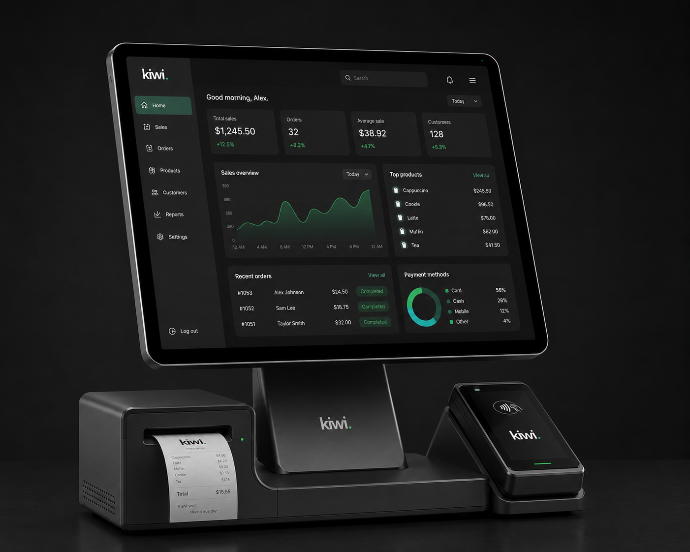
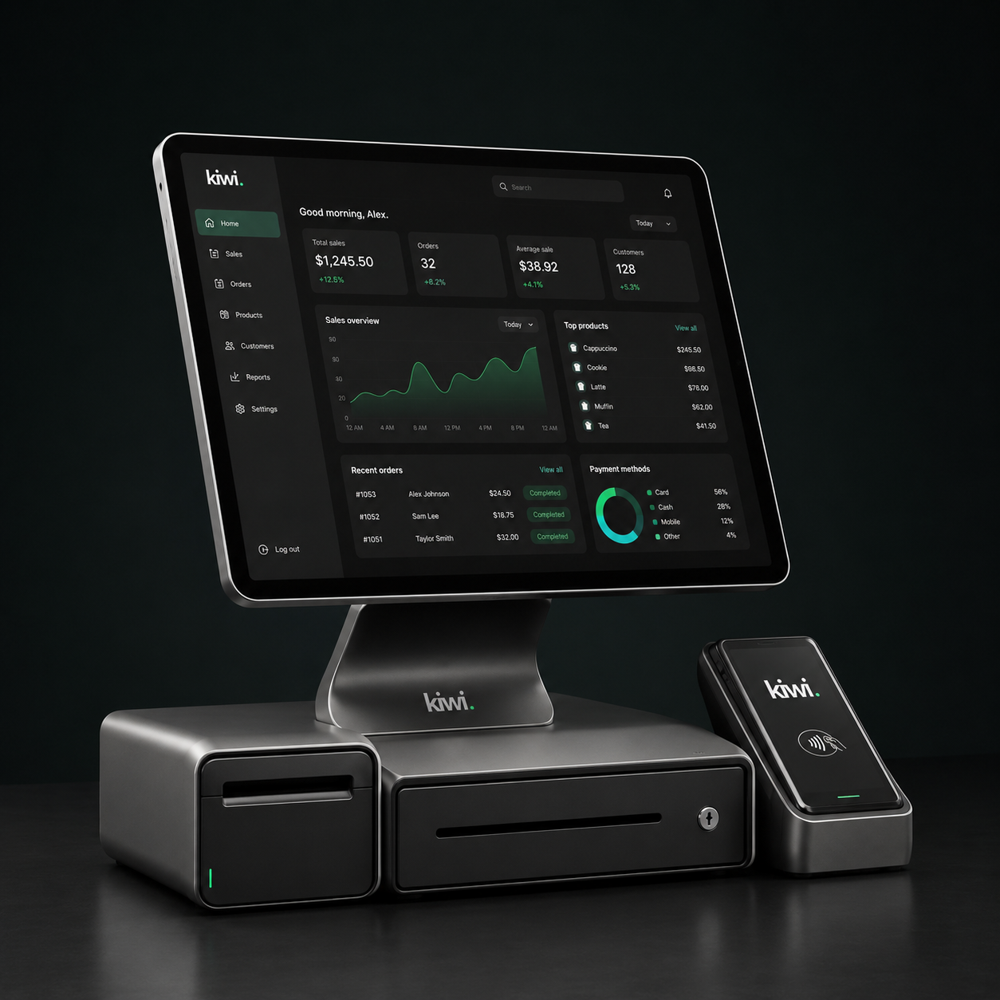
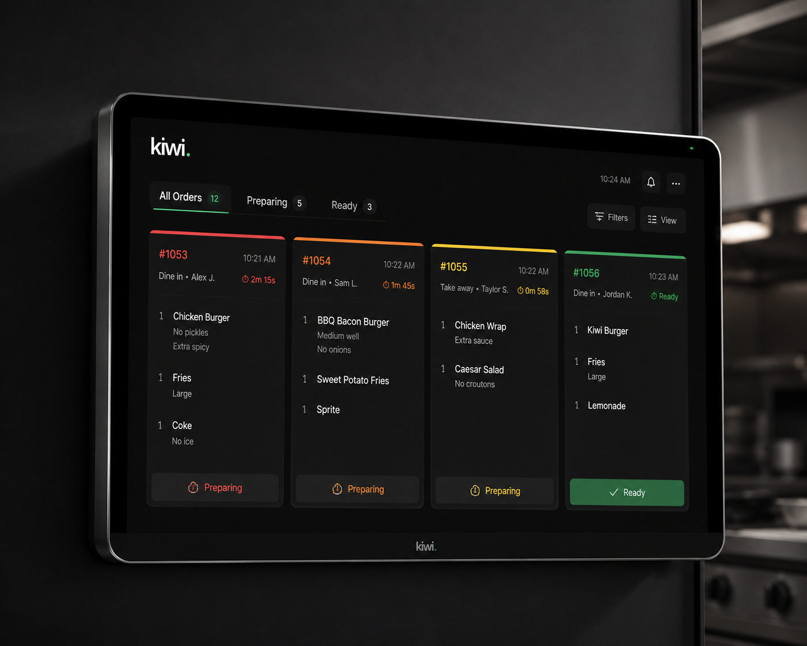

19,8 M
Touristes en 2025, record absolu, +14 % YoY, déjà au-delà de l'objectif 2026.
Ministère du Tourisme
Aujourd'hui, la caisse pensée pour la cuisine marocaine, la salle, le bar et le management. Demain, la banque qui suit le chiffre d'affaires. Au-delà, l'épargne qui ferme la boucle. Trois actes en une seule marque.
Au Maroc, on paie pour être mal servi. Le commerçant loue un terminal qu'il n'a pas choisi, attend trois jours pour voir son argent, signe un contrat de trois ans pour une commission qu'il ne comprend pas, et n'a pas de logiciel, juste un cahier, un téléphone, et un tiroir-caisse. Ce n'est pas un défaut culturel. C'est un défaut de marché. Pendant vingt ans, un seul opérateur a tenu la monnaie électronique du pays. Cette époque est terminée.
Kiwi commence là où finit le monopole. Aujourd'hui, un système de caisse en un clic pour la cuisine marocaine, prêté gratuitement, réglé en T+1. Demain, la banque qui suit. Au-delà, l'épargne qui ferme la boucle. Le commerçant marocain en sortira plus fort. Le pays aussi.
Quatre forces convergent, toutes publiques, toutes vérifiables, aucune n'est une opinion. Ensemble, elles dessinent une fenêtre de construction qui n'a jamais existé auparavant et ne se rouvrira pas.
Le commerçant marocain n'attend pas une nouvelle marque. Il attend un outil qui fonctionne dans une cuisine pleine, à l'heure du Maghreb, en darija, sans technicien à appeler, et qui ne le retient pas par un contrat de trois ans.
Trois critères tranchent, fréquence transactionnelle, pression d'acceptation carte côté touriste, et profondeur du problème opérationnel. Aucune autre verticale ne combine les trois. Une caisse F&B traite plus de tickets par jour qu'un commerce de détail, et le café marocain est déjà sur Instagram, déjà sur WhatsApp Business, déjà équipé d'un iPad. La barrière d'adoption logicielle est plus basse qu'on ne croit.
La cible de départ n'est pas « les 800 000 PME ». C'est, plus précisément, le sous-ensemble des restaurants et cafés multi-stations en zone touristique de Tanger, Casablanca, Rabat, et Marrakech, là où le client étranger force l'acceptation carte et où la complexité opérationnelle (cuisine + bar + glacier + crêperie) rend le logiciel indispensable.
Le statu quo n'est pas neutre. Il a un coût mensuel, un coût opérationnel, et un coût émotionnel, payés silencieusement par chaque restaurant, café, et boutique du pays.
Le terminal loué, le logiciel inexistant, le règlement retardé, le technicien à appeler, le contrat à respecter, chacun pris séparément paraît acceptable. Empilés, ils dessinent un coût que la majorité des opérateurs ne mesure jamais.
Une caisse Windows achetée plusieurs milliers de dirhams il y a quelques années, payée comptant, a la valeur émotionnelle d'un investissement, mais elle ne s'est jamais amortie. Chaque modification du menu déclenche un appel technicien. Chaque ouverture d'une station nouvelle relance le devis d'origine.
Pendant ce temps, le règlement T+2 force le commerçant à financer son propre stock avec sa trésorerie personnelle. Et le contrat de location de terminal continue, prélèvement après prélèvement, indépendamment du nombre de tickets passés.
Trois engagements structurels qui définissent l'expérience Kiwi à chaque écran, chaque interaction, chaque jour. Chacun est mesurable. Chacun est défendu produit par produit. Chacun est ce que la concurrence n'a pas l'intention de faire.
Ajouter un terminal, ouvrir un nouveau bar, pointer un serveur, modifier le menu, reconfigurer la cuisine, connecter Glovo, chaque action quotidienne devient une action sans technicien.
Interface, support, notifications, confirmations en darija transcrite. Parce que c'est comme ça qu'on parle au quotidien, pas en français corporate, pas en arabe classique distant.
L'argent encaissé aujourd'hui arrive sur l'IBAN du commerçant demain matin. Promis chaque jour ouvré, pas un batch perdu, pas un ticket d'appel à la banque.
Nous construisons en séquence, pas en parallèle. La caisse génère la donnée transactionnelle qui justifie la banque. La banque détient le rapport quotidien qui justifie l'épargne. Aujourd'hui Kiwi est une caisse, et c'est l'acte que nous défendons mois après mois.
Le système d'exploitation du commerçant. Caisse, plan de salle, routage cuisine multi-stations, écran de cuisine, application serveur, règlement T+1, matériel prêté, support WhatsApp en darija. La porte d'entrée, et le moat.
L'argent qui passe par la caisse mérite un compte. Compte courant marocain, carte de débit, financement Murabaha pour le stock, traitement carte direct sous licence Kiwi. La couche financière qui compose au-dessus de la caisse.
Quand l'argent dort sur le compte, il perd. Investissement fractionné en fonds AMMC, action CSE, ETF mondiaux, filtre halal natif. Pour le commerçant qui dégage de la trésorerie ; pour le client final qui veut sortir du matelas.
Tout ce qu'un café, un restaurant, ou un groupe hospitality a besoin pour ouvrir le service le matin et fermer la caisse le soir, dans une seule application, conçue pour la cuisine marocaine, pas pour la chaîne américaine. C'est aujourd'hui. C'est en exécution. C'est ce que nous défendons.
La verticale F&B au Maroc n'a aujourd'hui aucun éditeur logiciel sérieux. Les acteurs présents sont soit des fintechs horizontales (Chari, ADN distribution FMCG), soit des plateformes SME généralistes (Inyad, ADN multi-vertical), soit des filiales bancaires qui louent des terminaux.
Aucun ne ship le routage cuisine multi-stations comme une fonctionnalité de premier rang. Aucun ne traite les groupes hospitality comme un client de premier ordre. Aucun ne gère le Vendredi, le Ramadan, ou la Zakat dans le produit. C'est l'écart d'exécution que Kiwi ouvre, et défend.
Le périmètre Kiwi Systems n'est pas un MVP. C'est un produit complet pour ouvrir un service le matin, accompagner les serveurs pendant le coup de feu, fermer la caisse le soir, et lire ses chiffres avant de rentrer dormir.
Application front-of-house pensée pour la vitesse. Un serveur prend une commande complète en moins de 45 secondes. Mode hors-ligne intégré.
Carte visuelle des tables avec statut temps réel, libre, occupée, en attente d'addition, addition demandée. Glisser-déposer pour réorganiser.
Articles, catégories, variantes, suppléments, options « sans », photos. Édition en direct pendant le service. Bilingue FR/AR/EN simultané.
Sur smartphone Android ou iOS du serveur. PIN à 4 chiffres pour la rentrée rapide. Une saisie sur le smartphone, ticket fire automatique en cuisine.
Tablette Android murale en cuisine, codée par couleur selon l'âge des tickets. Le cuisinier valide quand le plat est prêt, le serveur reçoit la notification.
L'argent encaissé arrive sur l'IBAN du commerçant le lendemain matin. Promis chaque jour ouvré, pas un batch perdu en fin de mois.
Terminal PAX A920, tablette KDS, tablette caisse, lecteur Bluetooth, soft-POS pré-installé. Prêté gratuitement pour la durée de l'abonnement.
Comptes propriétaire, manager, serveur, cuisine, caissier, chacun avec son périmètre. PIN rapide. Multi-emplacement avec un seul compte.
Décompte automatique à chaque vente d'article. Alertes seuil bas, suggestions de réapprovisionnement. Cohérence stock-vente sans saisie manuelle.
Tableau de bord propriétaire sur mobile. Heatmap heure × jour, ticket moyen, rotation des tables, performance par serveur, comparatifs.
Taux TVA appliqués automatiquement par catégorie marocaine. Tickets de caisse réglementaires. Export comptable mensuel prêt pour le fiduciaire.
Pas d'agence, pas de hotline payante, pas de ticket. Une conversation WhatsApp, en darija ou en français, avec une réponse humaine sous quelques minutes.
Tout en un clic. Pas une métaphore, un engagement produit. Chaque action quotidienne d'un commerçant, ajouter un terminal, ouvrir un nouveau bar, pointer un serveur, modifier un prix, reconfigurer la cuisine, connecter Glovo, devient une action sans technicien. Pas de visite. Pas d'attente. Pas de devis.
Les sept démonstrations qui suivent sont interactives. Faites défiler pour les voir s'animer. Cliquez « rejouer » pour les relancer. Chacune montre un geste métier que les caisses Windows actuelles font payer en visite technicien, et que Kiwi rend instantané.
Le commerçant ajoute une caisse. Pas de visite technicien, pas de configuration manuelle, pas de re-paramétrage du routage cuisine. Le terminal arrive pré-appairé, se nomme tout seul, hérite du routage par défaut de l'emplacement. Démonstration ci-dessous.
L'opérateur hospitality qui ouvre un troisième site n'a pas envie de tout reconfigurer. Catalogue, équipe, routage, fiscalité, tout doit hériter du parent par défaut, avec exceptions locales possibles. Kiwi rend l'ouverture aussi simple qu'une ligne dans un menu déroulant.
Kiwi traite chaque station de cuisine comme un objet de premier rang. Ajouter un comptoir glaces ou un bar à jus déclenche une matrice de routage prête à être glissée, pas un appel technicien. Les articles concernés sont ré-orientés vers le nouvel écran sans interruption de service.
Le serveur arrive, ouvre l'application Kiwi sur son téléphone, tape son PIN, il est pointé. À la fin du shift, le PIN à nouveau, et la fiche de paie s'incrémente automatiquement. Pas de pointeuse, pas de cahier, pas de signature manager. Une seule action, propagée à tous les terminaux et au reporting.
Sur les caisses Windows actuelles, ouvrir un nouveau poste de cuisine ou réorienter un article entre deux stations demande une visite technicien. Sur Kiwi, c'est une matrice glisser-déposer accessible au propriétaire, l'article suit immédiatement le bon écran cuisine, sans coupure de service.
Glovo est aujourd'hui le principal canal de livraison F&B au Maroc ; Jumia Food a quitté le pays fin 2023. Kiwi expose un connecteur de commandes conforme au programme POS de Delivery Hero, propriétaire de Glovo : une commande reçue devient un ticket de cuisine et s'imprime au comptoir, sans attendre l'étiquette du prestataire. L'ouverture du flux Glovo lui-même passe par un accord partenaire signé avec leur représentation locale, non par une simple clé d'API.
Kiwi Pro est le palier d'entrée, caisse complète, T+1, support WhatsApp, multi-site jusqu'à trois adresses, équipe jusqu'à huit. Kiwi Ultra est le palier entreprise, équipe et venues illimitées, multi-pays, API enterprise, account manager dédié 24/7, white-glove onboarding, conseil stratégique trimestriel. Pro suffit pour la majorité. Ultra existe pour les groupes qui en ont besoin.
Tout ce qu'il faut pour ouvrir le service, accompagner le coup de feu, fermer la caisse, et lire les chiffres. Matériel inclus, aucun engagement.
Le palier entreprise, pour les groupes hôteliers, les chaînes premium, les opérateurs multi-pays, les hospitality families avec riads, rooftops, restaurants et spas en parallèle.
L'onboarding sur l'infrastructure historique demande plusieurs visites en agence, un dossier papier, une attente bancaire, une installation technicien. Le commerçant ne sait pas, à la signature, quand son terminal sera réellement allumé. Kiwi compresse l'ensemble dans une session unique de trente minutes, en darija ou en français, à la table du commerçant.
L'application réelle, embarquée dans ce document, pas une vidéo, pas une capture, pas un simulacre. Mode Simple par défaut pour le quotidien, trois onglets, gros chiffres, gros bouton « Encaisser ». Mode Pro pour le power-user, sidebar dense, KPI sparklines, feed live, drawer IA. Toggle haut-droite, raccourci ⌘⇧M.
Le règlement T+2 ou T+3 du système actuel oblige le commerçant à financer son propre stock avec sa trésorerie personnelle. Kiwi rétablit le cycle qui devrait toujours avoir existé : ce que vous encaissez ce soir, vous l'avez sur votre compte le lendemain matin. Pas de batch perdu, pas de week-end qui reporte le lundi, pas de ticket d'appel à la banque.
La trésorerie d'un café marocain qui réinvestit son chiffre d'affaires de la veille dans son stock du jour est structurellement plus saine qu'une trésorerie qui doit attendre 72 heures. Le commerçant achète mieux, négocie mieux avec ses fournisseurs, paie ses serveurs sans tension de fin de mois.
Côté Kiwi, le T+1 est une promesse opérationnelle, pas un produit financier. Il s'appuie sur notre partenaire acquéreur Phase 1 puis sur notre licence d'Établissement de Paiement Phase 2, sans coût additionnel pour le commerçant. C'est un engagement d'opération, pas une option payante.
Une famille de matériel pensée, dessinée et brandée Kiwi. Tablette comptoir, terminal Tap-to-Pay, imprimante thermique, tiroir-caisse, écran de cuisine, SoftPOS sur smartphone, tout livré, installé, et remplacé gratuitement pour la durée de l'abonnement. Le matériel est un poste CapEx Kiwi, jamais une ligne de revenu. C'est la position qui bascule le marchand sans friction de switch.

Tablette caisse 13 pouces orientable, imprimante ticket thermique 80 mm et terminal Tap-to-Pay sans contact. Chaque pièce est dessinée Kiwi, finition mate, branche-et-roule. Quatre câbles. Sept minutes d'installation.

Version avec tiroir-caisse motorisé sous la tablette, pour les comptoirs à fort encaissement espèces. Ouverture par code manager, journal d'ouvertures horodaté.

Écran anti-graisse, montage mural inclus. Code couleur par âge de ticket, vert < 4 min, ambre 4–8 min, rouge > 8 min. Bipe et vibre à 8 minutes. Routage automatique par station.
Application certifiée pré-installée sur le smartphone du serveur. Le téléphone devient terminal sans contact en terrasse, en livraison, ou en pop-up. Zéro matériel supplémentaire, le serveur a déjà son téléphone.
Livraison 48 heures partout au Maroc. Installation par technicien Kiwi sur place pour les groupes hospitality. Remplacement sous 48h en cas de panne, un parc de substitution est tenu à Tanger, Casablanca, Marrakech. Aucune caution. Aucun rachat. Le matériel reste propriété Kiwi.
C'est le groupe qui exploite trois à dix adresses, le restaurateur de Casablanca avec un flagship, deux concepts casual, et un contrat petit-déjeuner d'hôtel. Le riad de Marrakech avec un rooftop, une cour, et une maison d'hôtes. Ces clients ont des besoins qu'aucune caisse marocaine ne sert correctement aujourd'hui. Kiwi Pro les couvre jusqu'à trois adresses, Kiwi Ultra sans limite.
Un serveur appartient à la société, pas au flagship. Un manager voit toutes les adresses qu'il pilote, dans une vue consolidée. Un coup de chaud à Casablanca un samedi soir ? Le serveur de Rabat passe en couverture par un toggle, pas par une visite IT.
Le reporting reste propre par emplacement. La paie reste propre par employé. La consolidation est instantanée pour le propriétaire. Et l'acquisition d'un nouveau site ne demande pas une nouvelle installation, juste un nouveau toggle dans le tableau de bord.
Le tableau de bord propriétaire est conçu pour être lu sur mobile, en cinq minutes, avant de rentrer dormir. Pas un BI dashboard de chaîne américaine. Une lecture marocaine, chiffre du jour, comparaison à hier, top vendeurs, alerte stock, performance par serveur, projection de la semaine.
Encaissé temps réel, comparé à hier, à la même date l'an dernier, et au benchmark Kiwi du segment.
Identifier les coups de feu sous-staffés et les heures creuses sur-staffées, sur 7 jours glissants.
Par jour, par serveur, par segment client (régulier vs touriste), avec décomposition par catégorie.
Articles par revenu et par volume, avec marge brute estimée à partir des fiches recettes.
Revenu par serveur, ticket moyen par serveur, taux de remplissage des tables qu'il pilote.
Temps moyen d'occupation par table, identifier les tables structurellement sous-tournantes.
Le commerçant marocain vit déjà sur WhatsApp, son groupe cuisine, ses fournisseurs, ses clients fidèles, son comptable. Lui imposer une hotline payante, un email à un support@, ou un ticket dans une plateforme externe est une trahison de son canal natif. Le support Kiwi est WhatsApp, en darija ou en français, avec une réponse humaine.
L'objectif n'est pas de minimiser le coût de support. L'objectif est que chaque commerçant ait une réponse humaine en moins de quelques minutes, dans la langue dans laquelle il pense. Le coût de cette équipe est un investissement de moat, pas un poste à optimiser.
Pour Kiwi Ultra, le canal est dédié, chaque groupe hospitality a son account manager nommé, joignable directement, avec connaissance préalable du contexte opérationnel. Pour Kiwi Pro, le canal est mutualisé mais avec la même promesse de réponse humaine et de langue.
Aucune des couches ci-dessous n'est une garantie. C'est une posture qui s'entretient. Mais chacune, prise séparément, demande à un concurrent généraliste plusieurs années de travail produit pour la rattraper. Cumulées, elles tracent l'écart d'exécution que nous défendons mois après mois.
Menu, plan de salle, routage cuisine, KDS, split d'addition, rotation des tables, pensés en premier, pas en second. Toast a fait 30 milliards de capitalisation sur exactement ce choix.
Ajouter un terminal, ouvrir un nouveau bar, pointer un serveur, modifier le menu, reconfigurer la cuisine, connecter Glovo. Sept gestes-clés que la concurrence rend payants ou complexes.
Comptes équipe à l'échelle de la société, pas du local. Couverture cross-emplacement par toggle. Reporting consolidé. Pro pour 3 venues, Ultra sans limite.
Réseau familial de restaurateurs. Beachhead à Tanger sous-équipé en POS. Ville-test à taille humaine où chaque problème produit remonte en moins de 24 heures.
Zakat, Sadaqa, Ramadan, Vendredi, diaspora France-Maroc, support darija. Trop fin et trop local pour qu'une fintech étrangère le construise correctement.
Toute thèse Kiwi qui prétend partir d'un terrain vierge perd sa crédibilité dès le premier rendez-vous. Le marché marocain est vivant, mais les ADN respectifs des concurrents sont structurellement étrangers à la verticale F&B et à la profondeur métier hospitalité. Voici la matrice, ligne par ligne.
| Critère | Chari | Inyad / Mahaal | Stay Cashless | Caisse Windows | Papier + WhatsApp | Kiwi |
|---|---|---|---|---|---|---|
| Caisse F&B verticalePlan de salle, split, multi-station | — | Partiel | — | Partiel | — | Natif |
| Routage cuisine multi-stationsMatrice articles → écrans | — | — | — | Sur devis | — | Self-service · 60 sec |
| Écran de cuisine (KDS)Tablette murale codée par âge | — | — | — | — | — | Inclus |
| Multi-emplacement consolidéCompte société, vue groupe | Limité | Limité | — | — | — | Pro 3 · Ultra ∞ |
| Pointer l'équipe en un clicPIN 4 chiffres, pointage WhatsApp | — | Partiel | — | — | — | Inclus |
| Modifier le menu en servicePropagation live multi-caisses | — | Partiel | — | — | — | < 1 sec |
| Connecter Glovo nativementOAuth officiel, menu sync, KDS | — | Partiel | — | — | — | En 1 clic |
| Règlement T+1 garantiIBAN marocain, jour ouvré | Partiel | — | T+2 / T+3 | T+2 / T+3 | Cash | T+1 |
| Matériel prêté gratuitementAucune caution, aucun rachat | Achat | Achat | Location | Achat | — | Inclus |
| Support en darijaWhatsApp natif, humain | FR | FR | FR | FR / FR | — | Darija · WhatsApp |
| Onboarding en 30 minutesSur place, KYC digital | Variable | Variable | Agence | Visite tech | Aucun | 30 min |
| Aucun engagementRésiliation immédiate | Variable | Variable | Contrat | Hardware | — | Aucun |
| Couche culturelle marocaineZakat, Sadaqa, Ramadan, Vendredi | — | — | — | — | — | Native |
| Banking + Pay (avenir)IBAN, carte, Murabaha | Phase 1 | — | Bancaire | — | — | Phase 2 |
| Investing halal (avenir)AMMC fractionné, ETF | — | — | — | — | — | Phase 3 |
Aucun acteur du marché n'a aujourd'hui la combinaison verticale F&B + tout-en-un-clic + groupes hospitality + couche culturelle marocaine + trajectoire bancaire. Chacun a un fragment. Personne n'a la composition. C'est exactement où nous construisons.
Aucune fintech marocaine n'a gagné en attaquant le pays au scatter-shot. Toutes ont gagné en construisant la densité d'une ville avant de passer à la suivante. Tanger est notre ville-mère, sous-équipée, dense en hospitalité touristique, et où le réseau de distribution est déjà chaud par construction familiale.
La couche transversale de Kiwi est ce qui rend le produit irréductiblement marocain. Aucune fintech étrangère ne s'imposera la peine de la construire correctement, elle est trop fine, trop locale, trop culturelle. C'est aussi ce qui crée le lien émotionnel qui transforme un utilisateur en ambassadeur.
Calcul automatique sur le solde annuel et les placements, mise à jour selon le Nissab. Versement direct vers les associations agréées.
Arrondir chaque transaction au dirham supérieur, et reverser la différence à l'association de son choix. Justificatif fiscal généré.
Bascule automatique de l'horaire d'ouverture, des recettes attendues, du staffing. Heatmap décalée vers la nuit. Ftour et Souhour traités comme des shifts à part entière.
Suggestion de fermeture courte pour la prière du Vendredi midi, paramétrable par localisation et par opérateur.
Transfert et change EUR/MAD au taux interbancaire (Phase 2). Pour les MRE qui financent leur famille, et leur commerce.
Interface, support WhatsApp, notifications, et confirmations en darija transcrite. Parce que c'est comme ça qu'on parle au quotidien.
Côté client final, l'application Kiwi qui paie chez le commerçant Kiwi, gère le compte, calcule la Zakat, fait les transferts diaspora, et donne accès à l'épargne dès la Phase 3. Aperçu de la super-app marocaine, vue par l'utilisateur final.
Kiwi Systems est notre acte fondateur. Mais chaque commerçant abonné est, par construction, un futur titulaire d'un Kiwi Compte, et chaque jour de service génère la donnée de scoring qui justifiera demain le crédit, et plus tard l'épargne. Voici, en deux chapitres compacts, la trajectoire que la caisse rend possible.
Quand un commerçant utilise Kiwi Systems pendant six mois, nous voyons quelque chose qu'aucune banque marocaine ne voit : son chiffre d'affaires réel, jour par jour, ticket par ticket. Cette donnée nous donne le droit, et l'obligation, d'offrir le compte courant et le crédit qu'il n'a jamais reçu.
Compte courant marchand, ouverture digitale en quelques minutes, KYC sous cadre BAM Loi 103-12 et CNDP Loi 09-08.
Physique et virtuelle, contactless, Apple Pay, Google Pay. Émise sous licence Kiwi Pay une fois la PE obtenue.
Financement halal, achat-revente à marge transparente. Scoring sur historique transactionnel Kiwi. Décaissé en J+1.
L'Android du serveur devient un terminal de paiement sans contact certifié EMV. Plus de course au comptoir.
Pour les commandes catering, pré-réservations, livraisons directes. Lien envoyé par WhatsApp, paiement en deux clics.
Phase 2, licence d'Établissement de Paiement BAM. Spread complet capté, marge plancher pour le commerçant.
Le commerçant marocain qui dégage de la trésorerie a aujourd'hui deux options : la laisser sur un compte qui ne rémunère pas, ou la retirer et la garder en cash. La troisième option, investir en bourse, sur des fonds, ou sur les marchés internationaux, est techniquement réservée à une élite urbaine. Kiwi Investing supprime la barrière.
Fonds marocains agréés AMMC, fractionnés au dirham. Pas de ticket d'entrée, pas de frais de souscription cachés.
Bourse de Casablanca en lots fractionnaires. Attijariwafa, BMCE, Itissalat al-Maghrib, Cosumar, accessibles au dirham.
Actions, obligations, matières premières via partenaire international. Diversification au-delà du marché domestique.
Sharia-compliance traitée par défaut, screen par screen, instrument par instrument, mise à jour selon les comités reconnus.
Application directe du calcul Zakat sur le portefeuille investi, transparent et révisable annuellement.
Round-up, prélèvement mensuel, jour J. L'épargne devient un défaut, pas un effort.
Le binôme produit / opérations a été calibré pour la profondeur métier, pas pour la presse. Empathie domaine native, exécution technique forte, et la complémentarité nécessaire pour porter un projet de plusieurs années sans s'épuiser.
A grandi dans le restaurant familial à Tanger. Empathie domaine constituée à la caisse, en salle, et derrière le pass, pas en formation MBA. Pilote la stratégie produit, la distribution Tanger, et la relation marchand.
Profil triple : intuition opérateur F&B, langue maternelle commerçant, et la légitimité réseau qui ouvre les portes des opérateurs hospitalité indépendants du Nord.
Architecte de la pile technique et des opérations Kiwi. Pilote l'ingénierie, l'infrastructure de paiement, l'intégration acquéreur, la conformité technique (DGSSI, CNDP, LAB-FT), et le cadre réglementaire vers la licence d'Établissement de Paiement.
Profil ingénieur produit complet, des prototypes à la mise en production, des décisions d'architecture aux choix d'OEM hardware. La main droite et la main gauche du produit.
Chaque acte ouvre le suivant, par sa donnée, par sa relation, par son canal. Construire les trois en parallèle dilue l'exécution et tue la profondeur. La feuille de route ci-dessous est un engagement opérationnel, pas un calendrier de communication.
Pilote Tanger, onboarding personnel des premiers cafés et restaurants par les fondateurs. Études de cas vidéo, programme de parrainage, dîners mensuels Kiwi. Partenariat acquéreur Phase 1. Sourcing matériel auprès de Sunmi / PAX / Newland. Pro et Ultra disponibles dès le pilote.
Expansion vers les trois grandes villes commerciales avec une équipe terrain par ville. Acquisition ciblée des groupes hospitality multi-emplacements pour Kiwi Ultra. Préparation du dossier d'Établissement de Paiement.
Obtention de la licence EDP auprès de Bank Al-Maghrib. Lancement du Kiwi Compte, de la carte de débit, et du SoftPOS sous licence propre. Murabaha sur stock pour le commerçant. Liens de paiement WhatsApp.
Lancement du couloir France-Maroc EUR/MAD au taux interbancaire. Application Wallet consommateur ouverte au grand public. Calendrier 2030 World Cup en ligne de mire, préparation acceptation touristique nationale.
Agrément AMMC pour l'intermédiation. Lancement de l'investissement fractionné, fonds OPCVM marocains, actions CSE, ETF mondiaux. Filtre halal natif, comité de conformité Sharia. Plan d'épargne automatisé.
Expansion Tier 2 (Agadir, Fès, Tétouan, Meknès). Verticales adjacentes sélectives (boutiques, beauté, bien-être). Couche merchant-of-record pour les marketplaces internationales.
Dans dix ans, le commerçant marocain ne devra plus choisir entre une caisse étrangère mal traduite, une banque qui ne lit pas son métier, et un courtier qui ne lui ouvre pas la porte. Il aura Kiwi, qui parle sa langue, respecte ses rythmes, et compose au-dessus de chaque dirham qu'il fait passer.
Le commerçant en sortira plus fort. Le pays aussi.
Ce document est volontairement silencieux sur les éléments financiers, au Maroc, ces sujets se négocient en bilatéral, dans le respect des usages, et avec la confiance préalable. Nous sommes ouverts à toutes les conversations sérieuses.